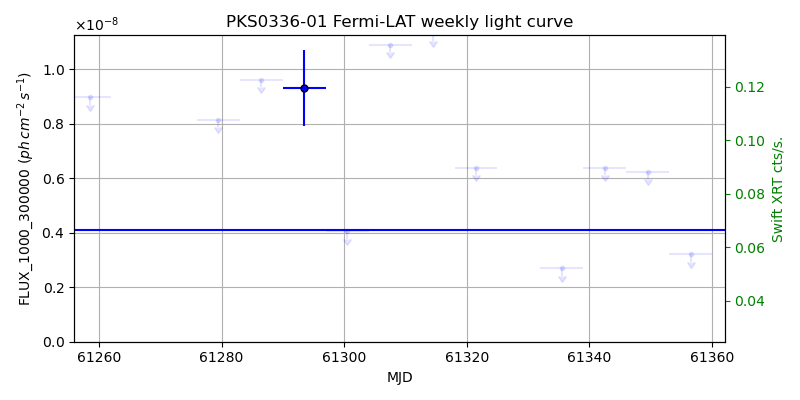

LAT Lightcurve site: https://fermi.gsfc.nasa.gov/ssc/data/access/lat/msl_lc/source/PKS_0336-01
Swift site: https://www.swift.psu.edu/monitoring/source.php?source=0336-019
NED: Query
Time of last update of this page: UT: 2026-11-20 16:14 (MJD: 61364.677)
| Property | Value |
|---|---|
| R.A. | 3:39:30.96 |
| Dec. | -1:46:37.2 |
| z | 0.852 |
| 3FGL SpectrumType | LogParabola |
| 3FGL PL Index | |
| 3FGL Flux_100_300000 | 8.42e-08 1 / (s cm2) |
| 3FGL Flux_1000_300000 | 4.08e-09 1 / (s cm2) |
| 3FGL Flux >200 GeV | 6.19e-13 1 / (s cm2) |
| 3FGL Extrap. Crab >200 GeV | 0.00 |
| 3FGL Flux After EBL Absorption >200GeV | 2.37e-14 1 / (s cm2) |
| 3FGL EBL Crab Fraction >200GeV | 0.00 |
| MJD | dMJD | Flux | dFlux | Frac3FGL | FracCrab>200GeV | EBLFracCrab>200GeV |
|---|---|---|---|---|---|---|
| 61359.50 | 0.50 | 1.63e-07 | 0.00e+00 | 0.00 | 0.00 | 0.00 |
| 61360.50 | 0.50 | 1.62e-07 | 0.00e+00 | 0.00 | 0.00 | 0.00 |
| 61361.50 | 0.50 | 2.89e-07 | 0.00e+00 | 0.00 | 0.00 | 0.00 |
| 61362.50 | 0.50 | 1.39e-07 | 0.00e+00 | 0.00 | 0.00 | 0.00 |
| 61363.50 | 0.50 | 2.06e-07 | 0.00e+00 | 0.00 | 0.00 | 0.00 |

| MJD | dMJD | Flux | dFlux | Frac3FGL | FracCrab>200GeV | EBLFracCrab>200GeV |
|---|---|---|---|---|---|---|
| 61328.50 | 3.50 | 3.75e-07 | 0.00e+00 | 0.00 | 0.00 | 0.00 |
| 61335.50 | 3.50 | 1.44e-07 | 0.00e+00 | 0.00 | 0.00 | 0.00 |
| 61342.50 | 3.50 | 6.79e-08 | 0.00e+00 | 0.00 | 0.00 | 0.00 |
| 61349.50 | 3.50 | 8.46e-08 | 0.00e+00 | 0.00 | 0.00 | 0.00 |
| 61356.50 | 3.50 | 1.68e-07 | 0.00e+00 | 0.00 | 0.00 | 0.00 |

| MJD | dMJD | Flux | dFlux | Frac3FGL | FracCrab>200GeV | EBLFracCrab>200GeV |
|---|---|---|---|---|---|---|
| 61359.50 | 0.50 | 2.03e-08 | 0.00e+00 | 0.00 | 0.00 | 0.00 |
| 61360.50 | 0.50 | 2.06e-08 | 0.00e+00 | 0.00 | 0.00 | 0.00 |
| 61361.50 | 0.50 | 2.48e-08 | 0.00e+00 | 0.00 | 0.00 | 0.00 |
| 61362.50 | 0.50 | 3.55e-08 | 0.00e+00 | 0.00 | 0.00 | 0.00 |
| 61363.50 | 0.50 | 4.48e-08 | 0.00e+00 | 0.00 | 0.00 | 0.00 |

| MJD | dMJD | Flux | dFlux | Frac3FGL | FracCrab>200GeV | EBLFracCrab>200GeV |
|---|---|---|---|---|---|---|
| 61328.50 | 3.50 | 1.48e-08 | 0.00e+00 | 0.00 | 0.00 | 0.00 |
| 61335.50 | 3.50 | 2.69e-09 | 0.00e+00 | 0.00 | 0.00 | 0.00 |
| 61342.50 | 3.50 | 6.38e-09 | 0.00e+00 | 0.00 | 0.00 | 0.00 |
| 61349.50 | 3.50 | 6.24e-09 | 0.00e+00 | 0.00 | 0.00 | 0.00 |
| 61356.50 | 3.50 | 3.20e-09 | 0.00e+00 | 0.00 | 0.00 | 0.00 |
--------------------------------------------------------- Using user-supplied coords: 3:39:30.96 -1:46:37.2 2000 --------------------------------------------------------- FLWO UT night of: 2026-11-21 Local Sid. @ Midnight: 03:37 Sunset (-15.0) (local, UT): 18:33 01:33 Sunrise (-15.0) (local, UT): 05:47 12:47 Moonrise (local, UT): Moonset (local, UT): 03:40 10:40 Moon phase: 0.85 --------------------------------------------------------- AzTime LSID UT Obj_el Obj_az Mn_el Mn_az Sep. --------------------------------------------------------- 18:33 22:09 01:33 5.2 95.1 47.9 117.4 46.8 19:03 22:39 02:03 11.5 99.2 53.3 125.0 46.6 19:33 23:09 02:33 17.8 103.5 58.2 134.7 46.5 20:03 23:39 03:03 23.9 108.1 62.3 146.9 46.4 20:33 00:09 03:33 29.9 113.2 65.1 162.1 46.3 21:03 00:39 04:03 35.6 119.0 66.3 179.7 46.1 21:33 01:09 04:33 41.0 125.6 65.4 197.5 46.0 22:03 01:39 05:03 46.0 133.5 62.9 213.2 45.9 22:33 02:09 05:33 50.3 142.7 59.0 225.9 45.8 23:03 02:39 06:03 53.6 153.6 54.2 235.9 45.6 23:33 03:09 06:33 55.8 166.1 48.9 243.9 45.5 00:03 03:39 07:03 56.6 179.6 43.2 250.4 45.3 00:33 04:10 07:33 55.9 193.1 37.3 255.9 45.2 01:03 04:40 08:03 53.8 205.6 31.2 260.7 45.0 01:33 05:10 08:33 50.5 216.6 25.1 265.1 44.8 02:03 05:40 09:03 46.3 226.0 19.0 269.2 44.6 02:33 06:10 09:33 41.4 233.9 12.9 273.0 44.4 03:03 06:40 10:03 36.0 240.6 6.8 276.9 44.2 03:33 07:10 10:33 30.3 246.4 1.0 280.7 44.0 04:03 07:40 11:03 24.3 251.6 -4.9 284.7 43.7 04:33 08:10 11:33 18.2 256.2 -11.1 288.8 43.5 05:03 08:40 12:03 11.9 260.5 -16.8 293.2 43.2 05:33 09:10 12:33 5.6 264.6 -22.3 298.1 42.9 05:47 09:25 12:47 2.7 266.5 -24.8 300.5 42.8 --------------------------------------------------------- Dark hours >55 deg.: 0.00